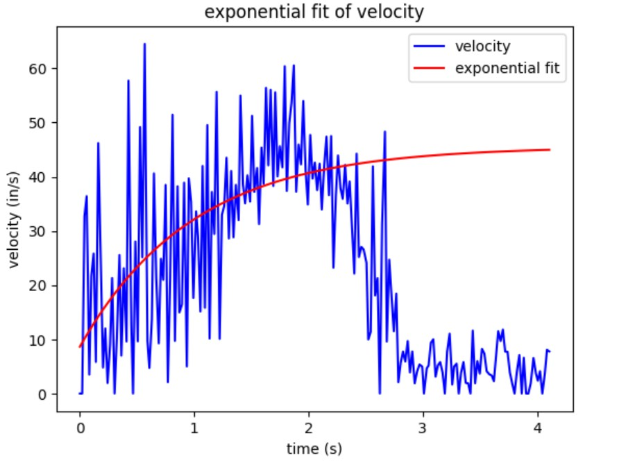
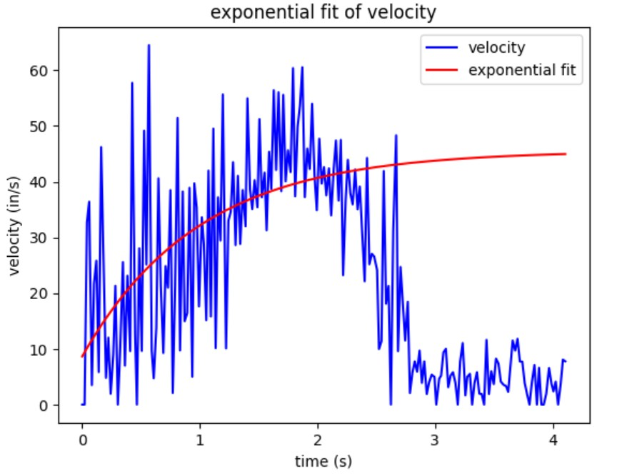

Objective
The goal of this lab is to implement a Kalman Filter, which will interpolate data in between ToF readings faster than the extrapolation in Lab 5.
The goal of this lab is to implement a Kalman Filter, which will interpolate data in between ToF readings faster than the extrapolation in Lab 5.
From lab 5, the maximum u(t) I used was approximately pwm=140. For this section I set pwm = 80. I used the ToF sensor's short mode; to allow speed to reach steady state while preventing the robot from running into the wall I set pwm lower.
I applied the step input to my robot and measured the steady state speed, 90% rise time, and speed at 90% rise time.
 


Fitted parameters: a=-36.87422499737086, b=-1.0135561712646444, c=45.53425693676829, y=a*exp(bx)+c
I found that the 90% rise time is ~2.27s, and the speed at this time is 41.8in/s
I first created my state space model by calculating the damping and mass from the data collected in the previous step. To discretize my matrices, I multiplied them by the sampling period.
Next, I set my process noise and measurement noise matrices. For process noise, I used the equations from the lecture slides, substituting in a sampling time of .02s since the timing budget of my ToF sensor is 20ms. For measurement noise, I referenced the ToF datasheet, which states that the short-range measurement mode has a ranging error of 20mm. With these parameters, sigma_1 = sigma_2 = 70.3
To implement the KF in Python, I modified the function provided in lecture to be able to test different process noise and measurement noise matrices.
Next, I tested the KF on a dataset I collected in Lab 5. For this dataset, I was sampling at 50Hz because I set the ToF timing budget to 20ms. Eventually, I want to collect distance and orientation data at roughly the same rate. I set a "desired frequency" of 180Hz, since that is the IMU sampling rate with DMP enabled (see Lab 6). I wrote a for-loop that would simulate sampling at 180Hz to test if my KF could successfully interpolate distances in between the 50Hz ToF measurements.
To my surprise, the KF interpolated in between measurements surprisingly well.
I then tested different process noise and measurement noise matrices to see how they would affect the KF.
From the plots, we can see that increasing process noise causes the KF to rely more on measurements, whereas increasing measurement noise causes the KF to rely more on the model.